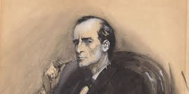
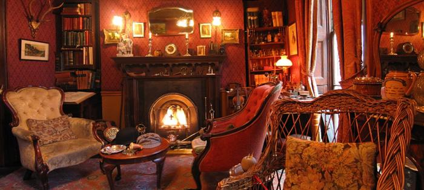

Always gloomy and moody, the legendary consulting detective Sherlock Holmes has made his name known to every household not only in Britain, but around the world.
He smokes like hell, he’s a drug addict, he’s mean to those who care about him. He’s far from being perfect. But if anything, he’s an extraordinary human being who really devotes his life and everything else to what he loves and also what he can do the best.
Okay, yeah, he’s a fictional private detective, and the genius who created him was Sir Arthur Conan Doyle. But hey, someone who is both fictional and interesting deserves a decent introduction, so here’s what you need to know about him.
Family Members: He had parents, who never really appeared in the stories, although Holmes did tell people that his grandmother was sister to the French artist Vernet. Luckily (or not?), Sherlock has an elder brother, Mycroft. Mycroft is perhaps the only match for Sherlock intelligently (but not physically, as Mycroft is incredibly lazy).
Including but not limited to...
The Sign of the FourThe Adventures of Sherlock Holmes
The Memoirs of Sherlock Holmes
His Last Bow: Some Later Reminiscences of Sherlock Holmes
The Case-Book of Sherlock Holmes
This may sound weird but he did develop his own way of solving the crime. For example -
Though the stories always refer to Holmes' intellectual detection methodology as "deduction", he primarily relies on abduction: inferring an explanation for observed details.[51][52][53] "From a drop of water", he writes, "a logician could infer the possibility of an Atlantic or a Niagara without having seen or heard of one or the other".
The detective is particularly skilled in the analysis of trace evidence and other physical evidence, including latent prints (such as footprints, hoof prints, and shoe and tire impressions) to identify actions at a crime scene.
Holmes displays a strong aptitude for acting and disguise. In several stories ("The Adventure of Charles Augustus Milverton", "The Man with the Twisted Lip", "The Adventure of the Empty House" and "A Scandal in Bohemia"), to gather evidence undercover he uses disguises so convincing that Watson fails to recognise him. In others ("The Adventure of the Dying Detective" and, again, "A Scandal in Bohemia"), Holmes feigns injury or illness to incriminate the guilty. In the latter story, Watson says, "The stage lost a fine actor ... when [Holmes] became a specialist in crime".
The world famous consulting detective Sherlock Holmes lived at 221b Baker Street between 1881-1904. Step back in time and visit The World's Most Famous Address - 221b Baker Street - the Official Home of Sherlock Holmes!
Or you can always turn to media adaptations, here are some good ones, for instance, your top choice would be:
Sherlock (BBC)